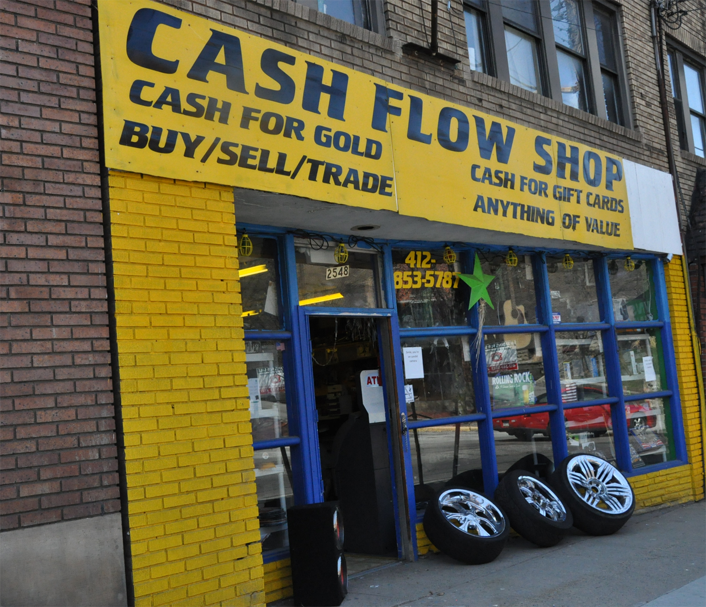
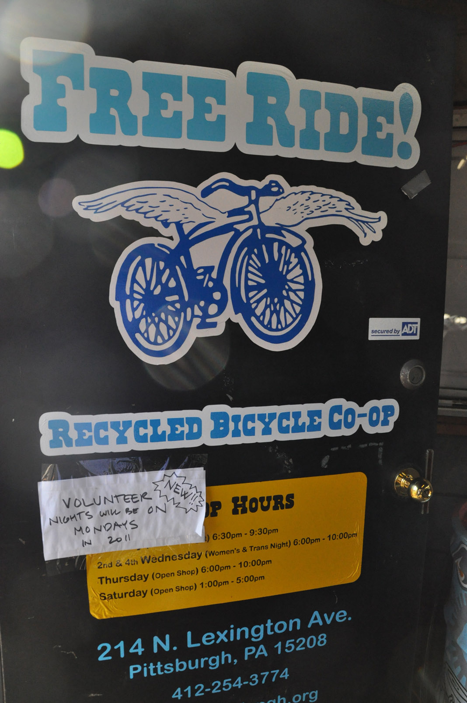
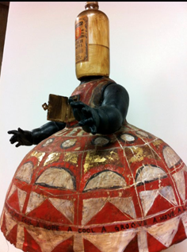
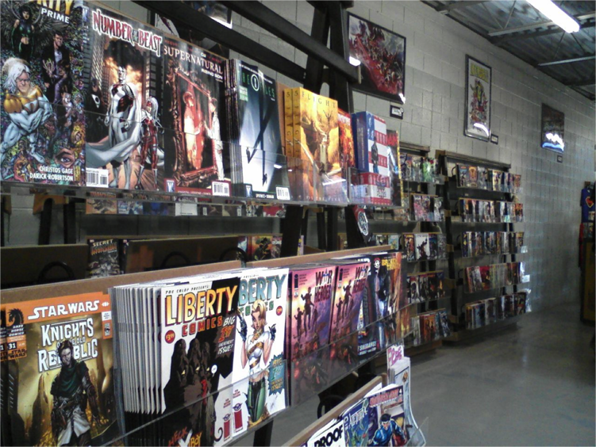

Research: Brick and Mortar Observations
To explore how users currently experience bartering in the real-world, we visited local pawn and trade shops to observe the physical space as well as try to barter some of our own goods. We also revisited a recent painting party based on trading for service.From these experiences we identified the advantages and disadvantages of bartering and the most popular bought and traded items. Our goal was to understand how we could mirror the advantages through an online concept as well as improve upon the experience via an online site.
Cash Flow Shop
Website: Cash Flow Shop Pittsburgh
Description: One of us visited two of the Cash Flow Shops in Pittsburgh. One location was in East Pittsburgh and the other location in Southside.
Our experience at the E. Pittsburgh Pawn shop was informative. There was an on-site technician (self-taught) responsible for fixing damaged electronics, and the manager.
When asked about trading, the manager stated that it is rare for someone to trade in today’s market; people are looking for cash.
He explained that negotiations are difficult because pawn shops are businesses that pay fees and have to make profits. As a result, even trades are out of the question.
Profits must be made off of each item traded, pawned, and purchased.
The most traded and sought out items are electronics (primarily laptop computers).
The items in the pawn shop included microwaves, tires and rims, electronics (tvs, cell phones, cell phone accessories, electronic keyboards), flags, dvd players, vcrs, stereo equipment, speakers, oils and lotions, shoes, and various
other items. Three people were in the store at the time and were looking for very specific items: laptops, headphones, and a television.
The second observation was done at the Southside location. One of us gathered items to be bartered and decided to barter some of our items for a computer remote to flip through power point presentations (a "clicker"). The experience at the second location was unpleasant primarily because of the manager's attitude and his demeanor. He kicked out two customers and interrupted us in the middle of our transaction by tending to another customer. The customer that interrupted us tried to purchase a model giraffe that he saw through the window for $20. He was told that the item was not for sale. The manager stated that the item was for "decoration" only. When the manager returned, he told us that he did not have a clicker and wanted to know how much we wanted for our items. When asked how much he would sell the XBox Kinect for, he stated that the item is not in-stock. We then explained that we wanted to trade our items and he said he would not trade with us; he said he would purchase our items and we could use the money to purchase something out of the store. He then looked at our merchandise, evaluated it and told us which items he did not want. He offered $5.00 for a $50.00 clocky and said it was his final offer.
We walked away from the transaction annoyed as we saw there was no way to negotiate with the manager. It was clear from one successful sell from a customer that the manager "preys" off of individuals in need of immediate cash. This model appeared to encourage and reward theft.
The Exchange

Description: Two of us visited The Exchange. One of us visited the Exchange in South Side and the other The Exchange in Squirrel Hill.
Visit 1: In comparison to the Cash Flow Pawn shop, the Exchange was better organized and all items were for sale. The Exchange in the South Side was limited to purchasing video games, movies, and video game consoles. The clerk assessed the value of
a GPS model by first checking to see if it was stolen, then checking Amazon for the price, and then offering us $14.00 in cash or $18.00 in store credit. The clerk explained that they do not purchase the other items we had for trade and suggested we check a local pawn shop.
Visit 2:
FreeRide
Website: Free Ride Pittsburgh
Description: Free Ride is a bicycle shop that operates solely by volunteers that recycle bicycles and provide education on how to fix bicycles. Each volunteer begins by attending a three hour volunteer session to learn about the program. Each hour volunteered is equal to about $8.00. Once you accumulate hours, you can then use those hours to attend classes on bike maintenance. Once you learn the skills to fix and repair bicycles you can use your time to visit the shop during repair hours to teach others how to repair their bicycles as well as borrow the tools to fix your personal bicycle.
Though Free Ride does not accept trades, individuals trade their volunteer hours for shop time to fix and repair their own bicycles. The atmosphere of the shop was welcoming, laid back, open, and helpful.
Painting Party
Sample of artist's work
Description: One of us attended a painting party the week prior to the assignment. The host advertised the party via Facebook and explained that though she would not be able to pay us for our services, she was willing to trade her artwork for assistance. For example, one person bartered paint for the artist's home for a piece of the artist's work. The artist also advertised on Facebook that she was interested in a new refrigerator and would be willing to trade her work for one.
Though she was willing to barter her artwork, many people came just for the fun of it and enjoyed free coffee/donuts.
Phantom of the Attic
Phantom of the Attic
Description:We visited both the Phantom of the Attic Games store as well as the comic book store, knowing that both cater to collector communities.
The game store carries items like games, cards, role play books, and figurines. We talked to one of the employees there, Leonard, who himself is an avid collector of games, cards, and role play books. From our conversation with him, we gathered insights about the process of collecting, how items are valued, and how trading has changed with the popularization of the Internet. Typically, although guides are published on how items should be valued, the price will vary from person to person. With the advent of the Web, someone who no longer wants one of their items can trade with someone in another state who finds value in that same item. Value of items can also fluctuate based on any changes made to a set. For instance, if an interesting item is added to a set with little value, the set will increase in value along with other items within the set.
The comic book store carries comic books, books about comics (e.g. tutorials on drawing), and action figures. A bulk of the comic books are back issues that range from the 1950's to current comics. The employee we talked to does not necessarily collect anything, but mentioned his gravitation toward anything "cool." He says in general, the value of items is estimated based on story, rarity, whether or not it's the first appearance of a hero, and condition. Many collectors will scavenge wherever they can especially at flea markets, conventions, ebay, and various comic stores. He mentioned that in many cases of collectors, they will spend years collecting full sets of comic books and scavenge wherever they can to fill "holes" in the sets. Items are sometimes sent to a "grading service" to get the item professionally priced based on condition, rarity, and other elements.